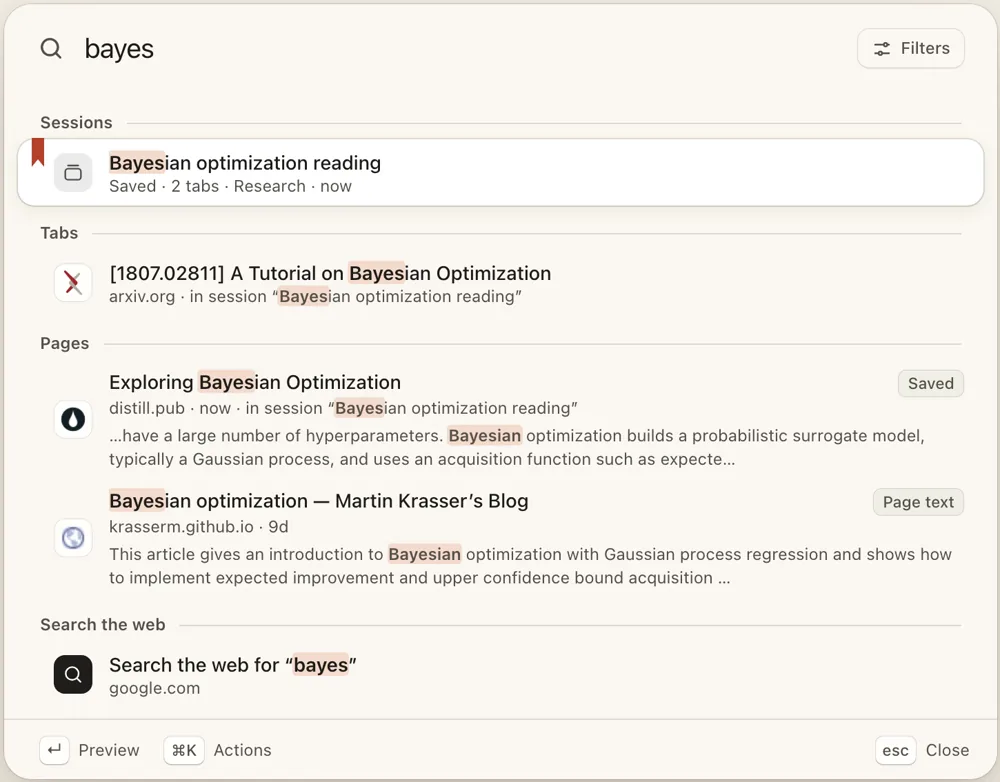

Tabs & sessions, macOS, Safari, Chrome
Wayfinder
Pick up where you left off — pages, in order.
⌘⇧Kon any page · ⌃⌥Spacefrom any app

One palette
Everything you opened, one search away.
Tabs still open, pages you kept, every version of a window and, if you turn it on, the text of pages you have already read. Each match says where it came from.
- ◫Bayesian inference — Wikipediaen.wikipedia.orgOpen tab
- ≋Thesis · stats reading14 pages, in order · 3 versionsSession
- ☆Think Bayes — chapter 2Saved on purpose, last weekSaved page
- ¶“…the posterior is the prior, updated by the evidence…”From a page you readPage text
- ◫bayes_model.ipynbAnother windowOpen tab
How it fits together
A task, a session, a page.
A task is a saved window
Capture the pages of a working session in order, then resume the whole thing later.
Sessions are its versions
Over time, a window becomes a version history instead of a pile of tabs.
Saved pages are the ones you want again
The individual things you kept on purpose, searchable next to everything else.
The palette searches all of them
And it remembers where a match came from — a tab still open, a page you saved, a session snapshot, or text you have read before.
What it does
A browser you can come back to.
Quick Open from anywhere
⌃⌥Space reopens a session or a saved page without switching to the browser first.
A calm new tab
A deck of your tasks, a clock, site search shortcuts and an optional daily wallpaper.
Yours to sync
No account, no analytics, no server. Sync is optional and goes to your own WebDAV server or your own iCloud account.
Private by default
Two switches. Both start off.
Record visits
Off until you turn it on.
Index page text
Off until you turn it on. Full page text never syncs; the optional index sync carries a title, address and a short excerpt only.
Never indexed
- Private windows
- Sites you exclude
- Sensitive sites
Never restored
- Form data
- Logins
- Unsaved page state
Getting set up
Two minutes, then one shortcut.
- Open Wayfinder once.
- Safari → Settings (⌘,) → Extensions: enable Wayfinder and allow it on all websites.
- Press ⌘⇧K on any page.
- Install the extension from the Chrome Web Store.
- Press Ctrl⇧K, or ⌘⇧K on a Mac.
Pages that were already open before installing or updating need a reload before the palette can attach to them.
Wayfinder turns Safari into a place you can come back to. Keep a window as a task, restore it whenever you need it, and search every open tab, saved page and session from one palette that works on any page — and from any app, with a global hotkey.
Price
Wayfinder is free, with no subscription and no in-app purchase.
Need help with Wayfinder?
Setup, the palette, sessions, sync and data questions are answered on the support page.